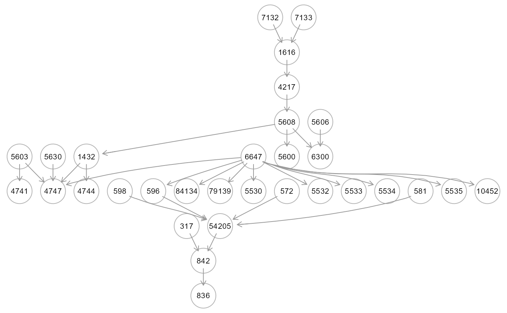
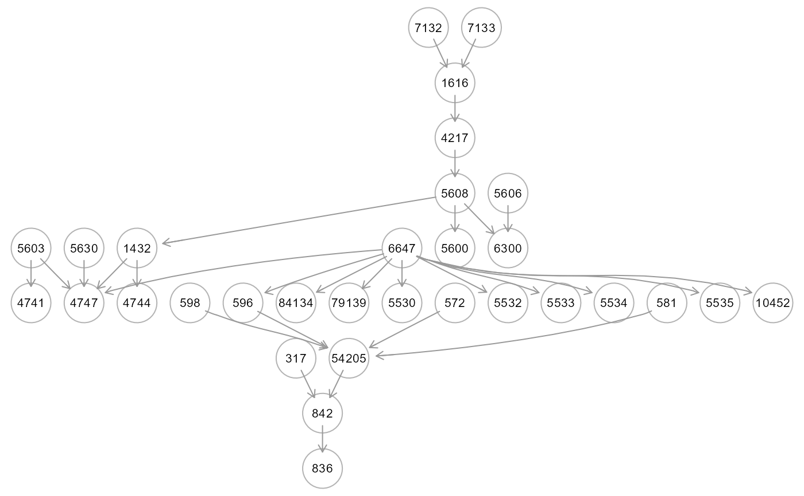
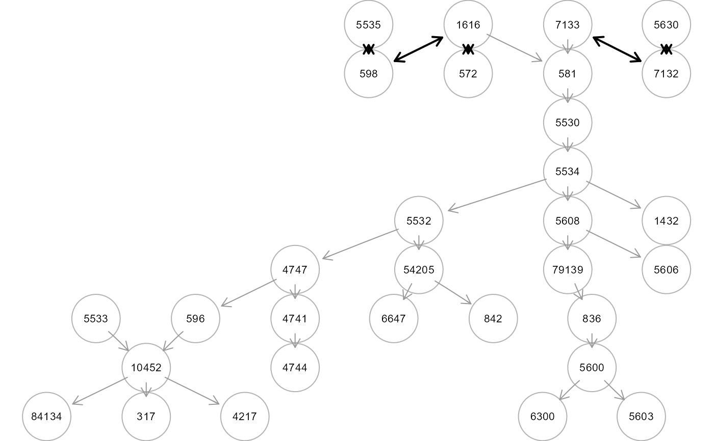
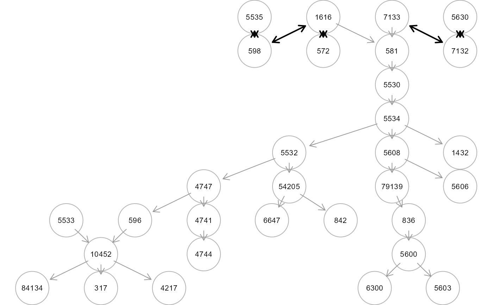

Four tree-based structure learning methods are implemented with graph and data-driven algorithms.
Arguments
- graph
An igraph object.
- data
A matrix or data.frame. Rows correspond to subjects, and columns to graph nodes (variables).
- seed
A vector of seed nodes.
- type
Tree-based structure learning method. Four algorithms are available:
"ST"(default). Steiner Tree (ST) identification via fast Kou's algorithm (Kou et al, 1981) connecting a set of seed nodes (called Terminal vertices) with connector nodes (called Steiner vertices) from input graph as defined in
graphwith minimal total distance on its edges. By default the edge weights are based on the pairwise correlation, 1-abs(cor(j,k)). If input graph has E(graph)$weight=1, andeweight = "custom", ST seeks a minimum subtree (i.e., the subtree with minimal number of edges)."CAT". Causal additive trees (CAT) algorithm as in Jakobsen et al. (2022). The argument
graphis set to NULL (i.e., no input graph is needed). In the first step, a (univariate) generalized additive model (GAM) is employed to estimate the residual variances, var(X(j) - [X(j)|X(k)]) for all j != k, then use these to construct edge weights as inputs to the Chu–Liu–Edmonds’ algorithm (Chow and Liu, 1968) to recover the arborescence. Argumentseedmust be specified to analyse a subset of nodes (variables) of interest."CPDAG". CLE algorithm for Skeleton Recovery and CPDAG estimation as in Lou et al. (2021). Together with "CAT" algorithm, "CPDAG" is data-driven and the argument
graphis set to NULL. The key idea is to first recover the skeleton of the polytree by applying the CLE algorithm to the pairwise sample correlations of the data matrix. After the skeleton is recovered, the set of all v-structures can be correctly identified via a simple thresholding approach to pairwise sample correlations. CPDAG can be found applying iteratively only Rule 1 of Meek (1995). Argumentseedmust be specified to analyse a subset of nodes (variables) of interest."MST". Minimum Spanning Tree (MST) identification via Prim's algorithm (Prim, 1957). The latter finds the subset of edges that includes every vertex of the graph (as defined in
graph) such that the sum of the weights of the edges can be minimized. The argumentseedis set to NULL (i.e., no seed nodes are needed).
- eweight
Edge weight type for igraph object can be externally derived using
weightGraphor from user-defined distances. This option determines the weight-to-distance transform. If set to:"NULL" (default), edge weights will be internally computed equal to 1 - abs(pairwise Pearson's correlation).
"kegg", repressing(-1), neutral(0) and activating(+1) kegg interactions will be multiplied by "zsign" attributes, and positive (i.e., concordant) values will be set to 1 (minimum distance), while negative (i.e., discordant) values will be set to 2.
"zsign", all significant interactions (abs(zsign) > 0) will be set to 1 (minimum distance), while non-significant (zsign=0) ones will be set to 2.
"pvalue", edge p-value atributes will be transformed to the inverse of negative base-10 logarithm, 1/(-log(E(graph)$pv)).
"custom", the algorithm will use the distance measure specified by the user as "weight" edge attribute in the input graph.
- alpha
Threshold for rejecting a pair of node being independent in "CPDAG" algorithm. The latter implements a natural v-structure identification procedure by thresholding the pairwise sample correlations over all adjacent pairs of edges with some appropriate threshold. By default,
alpha = 0.05.- verbose
If TRUE, it shows the output tree (not recommended for large graphs).
- ...
Currently ignored.
Value
An igraph object. If type = "ST", seed nodes are
colored in "aquamarine" and connectors in "white". If type = "ST" and
type = "MST", edges are colored in "green" if not present in the input,
graph. If type = "CPDAG", bidirected edges are colored in "black"
(if the algorithm is not able to establish the direction of the relationship
between x and y).
Details
A tree ia an acyclic graph with p vertices and p-1 edges. The graph method
refers to the Steiner Tree (ST), a tree from an undirected graph that connect "seed"
with additional nodes in the "most compact" way possible. The data-driven methods
propose fast and scalable procedures based on Chu-Liu–Edmonds’ algorithm (CLE) to
recover a tree from a full graph. The first method, called Causal Additive Trees (CAT)
uses pairwise mutual weights as input for CLE algorithm to recover a directed tree
(an "arborescence"). The second one applies CLE algorithm for skeleton recovery and
extends the skeleton to a tree (a "polytree") represented by a Completed Partially
Directed Acyclic Graph (CPDAG). Finally, the Minimum Spanning Tree (MST) connecting
an undirected graph with minimal edge weights can be identified.
To note, if the input graph is a directed graph, ST and MST undirected trees are
converted in directed trees using the orientEdges function.
References
Kou, L., Markowsky, G., Berman, L. (1981). A fast algorithm for Steiner trees. Acta Informatica 15, 141–145. <https://doi.org/10.1007/BF00288961>
Prim, R.C. (1957). Shortest connection networks and some generalizations Bell System Technical Journal, 37 1389–1401.
Chow, C.K. and Liu, C. (1968). Approximating discrete probability distributions with dependence trees. IEEE Transactions on Information Theory, 14(3):462–467.
Meek, C. (1995). Causal inference and causal explanation with background knowledge. In Proceedings of the Eleventh conference on Uncertainty in artificial intelligence, 403–410.
Jakobsen, M, Shah, R., Bühlmann, P., Peters, J. (2022). Structure Learning for Directed Trees. arXiv: <https://doi.org/10.48550/arxiv.2108.08871>.
Lou, X., Hu, Y., Li, X. (2022). Linear Polytree Structural Equation Models: Structural Learning and Inverse Correlation Estimation. arXiv: <https://doi.org/10.48550/arxiv.2107.10955>
Grassi M, Tarantino B (2023). SEMtree: tree-based structure learning methods with structural equation models. Bioinformatics, 39 (6), 4829–4830 <https://doi.org/10.1093/bioinformatics/btad377>
Author
Mario Grassi mario.grassi@unipv.it
Examples
# \donttest{
# Nonparanormal(npn) transformation
als.npn <- transformData(alsData$exprs)$data
#> Conducting the nonparanormal transformation via shrunkun ECDF...done.
# graph-based trees
graph <- alsData$graph
seed <- V(graph)$name[sample(1:vcount(graph), 10)]
tree1 <- SEMtree(graph, als.npn, seed=seed, type="ST", verbose=TRUE)
 #> RICF solver ended normally after 2 iterations
#>
#> deviance/df: 17.26288 srmr: 0.3123032
#>
tree2 <- SEMtree(graph, als.npn, seed=NULL, type="MST", verbose=TRUE)

#> RICF solver ended normally after 2 iterations
#>
#> deviance/df: 10.64067 srmr: 0.2815872
#>
# data-driven trees
V <- colnames(als.npn)[colnames(als.npn) %in% V(graph)$name]
tree3 <- SEMtree(NULL, als.npn, seed=V, type="CAT", verbose=TRUE)
#> Score weighting of 930 edges...
#>
/ 0 % elapsed=00s
- 1 % elapsed=00s, remaining~05s
\ 2 % elapsed=00s, remaining~04s
| 3 % elapsed=00s, remaining~04s
/ 4 % elapsed=00s, remaining~04s
- 5 % elapsed=00s, remaining~04s
\ 6 % elapsed=00s, remaining~04s
| 8 % elapsed=00s, remaining~04s
/ 9 % elapsed=00s, remaining~04s
- 10% elapsed=00s, remaining~04s
\ 11% elapsed=00s, remaining~03s
| 12% elapsed=00s, remaining~04s
/ 13% elapsed=01s, remaining~04s
- 14% elapsed=01s, remaining~03s
\ 15% elapsed=01s, remaining~03s
| 16% elapsed=01s, remaining~03s
/ 17% elapsed=01s, remaining~03s
- 18% elapsed=01s, remaining~03s
\ 19% elapsed=01s, remaining~03s
| 20% elapsed=01s, remaining~03s
/ 22% elapsed=01s, remaining~03s
- 23% elapsed=01s, remaining~03s
\ 24% elapsed=01s, remaining~03s
| 25% elapsed=01s, remaining~03s
/ 26% elapsed=01s, remaining~03s
- 27% elapsed=01s, remaining~03s
\ 28% elapsed=01s, remaining~03s
| 29% elapsed=01s, remaining~03s
/ 30% elapsed=01s, remaining~03s
- 31% elapsed=01s, remaining~03s
\ 32% elapsed=01s, remaining~03s
| 33% elapsed=01s, remaining~03s
/ 34% elapsed=01s, remaining~03s
- 35% elapsed=01s, remaining~03s
\ 37% elapsed=01s, remaining~02s
| 38% elapsed=01s, remaining~02s
/ 39% elapsed=02s, remaining~02s
- 40% elapsed=02s, remaining~02s
\ 41% elapsed=02s, remaining~02s
| 42% elapsed=02s, remaining~02s
/ 43% elapsed=02s, remaining~02s
- 44% elapsed=02s, remaining~02s
\ 45% elapsed=02s, remaining~02s
| 46% elapsed=02s, remaining~02s
/ 47% elapsed=02s, remaining~02s
- 48% elapsed=02s, remaining~02s
\ 49% elapsed=02s, remaining~02s
| 51% elapsed=02s, remaining~02s
/ 52% elapsed=02s, remaining~02s
- 53% elapsed=02s, remaining~02s
\ 54% elapsed=02s, remaining~02s
| 55% elapsed=02s, remaining~02s
/ 56% elapsed=02s, remaining~02s
- 57% elapsed=02s, remaining~02s
\ 58% elapsed=02s, remaining~02s
| 59% elapsed=02s, remaining~02s
/ 60% elapsed=02s, remaining~02s
- 61% elapsed=02s, remaining~02s
\ 62% elapsed=02s, remaining~01s
| 63% elapsed=02s, remaining~01s
/ 65% elapsed=02s, remaining~01s
- 66% elapsed=03s, remaining~01s
\ 67% elapsed=03s, remaining~01s
| 68% elapsed=03s, remaining~01s
/ 69% elapsed=03s, remaining~01s
- 70% elapsed=03s, remaining~01s
\ 71% elapsed=03s, remaining~01s
| 72% elapsed=03s, remaining~01s
/ 73% elapsed=03s, remaining~01s
- 74% elapsed=03s, remaining~01s
\ 75% elapsed=03s, remaining~01s
| 76% elapsed=03s, remaining~01s
/ 77% elapsed=03s, remaining~01s
- 78% elapsed=03s, remaining~01s
\ 80% elapsed=03s, remaining~01s
| 81% elapsed=03s, remaining~01s
/ 82% elapsed=03s, remaining~01s
- 83% elapsed=03s, remaining~01s
\ 84% elapsed=03s, remaining~01s
| 85% elapsed=03s, remaining~01s
/ 86% elapsed=03s, remaining~01s
- 87% elapsed=03s, remaining~01s
\ 88% elapsed=03s, remaining~00s
| 89% elapsed=03s, remaining~00s
/ 90% elapsed=04s, remaining~00s
- 91% elapsed=04s, remaining~00s
\ 92% elapsed=04s, remaining~00s
| 94% elapsed=04s, remaining~00s
/ 95% elapsed=04s, remaining~00s
- 96% elapsed=04s, remaining~00s
\ 97% elapsed=04s, remaining~00s
| 98% elapsed=04s, remaining~00s
/ 99% elapsed=04s, remaining~00s
- 100% elapsed=04s, remaining~00s
#> RICF solver ended normally after 2 iterations
#>
#> deviance/df: 17.26288 srmr: 0.3123032
#>
tree2 <- SEMtree(graph, als.npn, seed=NULL, type="MST", verbose=TRUE)

#> RICF solver ended normally after 2 iterations
#>
#> deviance/df: 10.64067 srmr: 0.2815872
#>
# data-driven trees
V <- colnames(als.npn)[colnames(als.npn) %in% V(graph)$name]
tree3 <- SEMtree(NULL, als.npn, seed=V, type="CAT", verbose=TRUE)
#> Score weighting of 930 edges...
#>
/ 0 % elapsed=00s
- 1 % elapsed=00s, remaining~05s
\ 2 % elapsed=00s, remaining~04s
| 3 % elapsed=00s, remaining~04s
/ 4 % elapsed=00s, remaining~04s
- 5 % elapsed=00s, remaining~04s
\ 6 % elapsed=00s, remaining~04s
| 8 % elapsed=00s, remaining~04s
/ 9 % elapsed=00s, remaining~04s
- 10% elapsed=00s, remaining~04s
\ 11% elapsed=00s, remaining~03s
| 12% elapsed=00s, remaining~04s
/ 13% elapsed=01s, remaining~04s
- 14% elapsed=01s, remaining~03s
\ 15% elapsed=01s, remaining~03s
| 16% elapsed=01s, remaining~03s
/ 17% elapsed=01s, remaining~03s
- 18% elapsed=01s, remaining~03s
\ 19% elapsed=01s, remaining~03s
| 20% elapsed=01s, remaining~03s
/ 22% elapsed=01s, remaining~03s
- 23% elapsed=01s, remaining~03s
\ 24% elapsed=01s, remaining~03s
| 25% elapsed=01s, remaining~03s
/ 26% elapsed=01s, remaining~03s
- 27% elapsed=01s, remaining~03s
\ 28% elapsed=01s, remaining~03s
| 29% elapsed=01s, remaining~03s
/ 30% elapsed=01s, remaining~03s
- 31% elapsed=01s, remaining~03s
\ 32% elapsed=01s, remaining~03s
| 33% elapsed=01s, remaining~03s
/ 34% elapsed=01s, remaining~03s
- 35% elapsed=01s, remaining~03s
\ 37% elapsed=01s, remaining~02s
| 38% elapsed=01s, remaining~02s
/ 39% elapsed=02s, remaining~02s
- 40% elapsed=02s, remaining~02s
\ 41% elapsed=02s, remaining~02s
| 42% elapsed=02s, remaining~02s
/ 43% elapsed=02s, remaining~02s
- 44% elapsed=02s, remaining~02s
\ 45% elapsed=02s, remaining~02s
| 46% elapsed=02s, remaining~02s
/ 47% elapsed=02s, remaining~02s
- 48% elapsed=02s, remaining~02s
\ 49% elapsed=02s, remaining~02s
| 51% elapsed=02s, remaining~02s
/ 52% elapsed=02s, remaining~02s
- 53% elapsed=02s, remaining~02s
\ 54% elapsed=02s, remaining~02s
| 55% elapsed=02s, remaining~02s
/ 56% elapsed=02s, remaining~02s
- 57% elapsed=02s, remaining~02s
\ 58% elapsed=02s, remaining~02s
| 59% elapsed=02s, remaining~02s
/ 60% elapsed=02s, remaining~02s
- 61% elapsed=02s, remaining~02s
\ 62% elapsed=02s, remaining~01s
| 63% elapsed=02s, remaining~01s
/ 65% elapsed=02s, remaining~01s
- 66% elapsed=03s, remaining~01s
\ 67% elapsed=03s, remaining~01s
| 68% elapsed=03s, remaining~01s
/ 69% elapsed=03s, remaining~01s
- 70% elapsed=03s, remaining~01s
\ 71% elapsed=03s, remaining~01s
| 72% elapsed=03s, remaining~01s
/ 73% elapsed=03s, remaining~01s
- 74% elapsed=03s, remaining~01s
\ 75% elapsed=03s, remaining~01s
| 76% elapsed=03s, remaining~01s
/ 77% elapsed=03s, remaining~01s
- 78% elapsed=03s, remaining~01s
\ 80% elapsed=03s, remaining~01s
| 81% elapsed=03s, remaining~01s
/ 82% elapsed=03s, remaining~01s
- 83% elapsed=03s, remaining~01s
\ 84% elapsed=03s, remaining~01s
| 85% elapsed=03s, remaining~01s
/ 86% elapsed=03s, remaining~01s
- 87% elapsed=03s, remaining~01s
\ 88% elapsed=03s, remaining~00s
| 89% elapsed=03s, remaining~00s
/ 90% elapsed=04s, remaining~00s
- 91% elapsed=04s, remaining~00s
\ 92% elapsed=04s, remaining~00s
| 94% elapsed=04s, remaining~00s
/ 95% elapsed=04s, remaining~00s
- 96% elapsed=04s, remaining~00s
\ 97% elapsed=04s, remaining~00s
| 98% elapsed=04s, remaining~00s
/ 99% elapsed=04s, remaining~00s
- 100% elapsed=04s, remaining~00s
 #> RICF solver ended normally after 2 iterations
#>
#> deviance/df: 5.696462 srmr: 0.2143798
#>
tree4 <- SEMtree(NULL, als.npn, seed=V, type="CPDAG", alpha=0.05, verbose=TRUE)
#>
#> 9 -> 3 <- 29
#>
#> 29 -> 3 <- 9
#>
#> 4 -> 30 <- 23
#>
#> 23 -> 30 <- 4

#> RICF solver ended normally after 8 iterations
#>
#> deviance/df: 5.759128 srmr: 0.209403
#>
# }
#> RICF solver ended normally after 2 iterations
#>
#> deviance/df: 5.696462 srmr: 0.2143798
#>
tree4 <- SEMtree(NULL, als.npn, seed=V, type="CPDAG", alpha=0.05, verbose=TRUE)
#>
#> 9 -> 3 <- 29
#>
#> 29 -> 3 <- 9
#>
#> 4 -> 30 <- 23
#>
#> 23 -> 30 <- 4

#> RICF solver ended normally after 8 iterations
#>
#> deviance/df: 5.759128 srmr: 0.209403
#>
# }